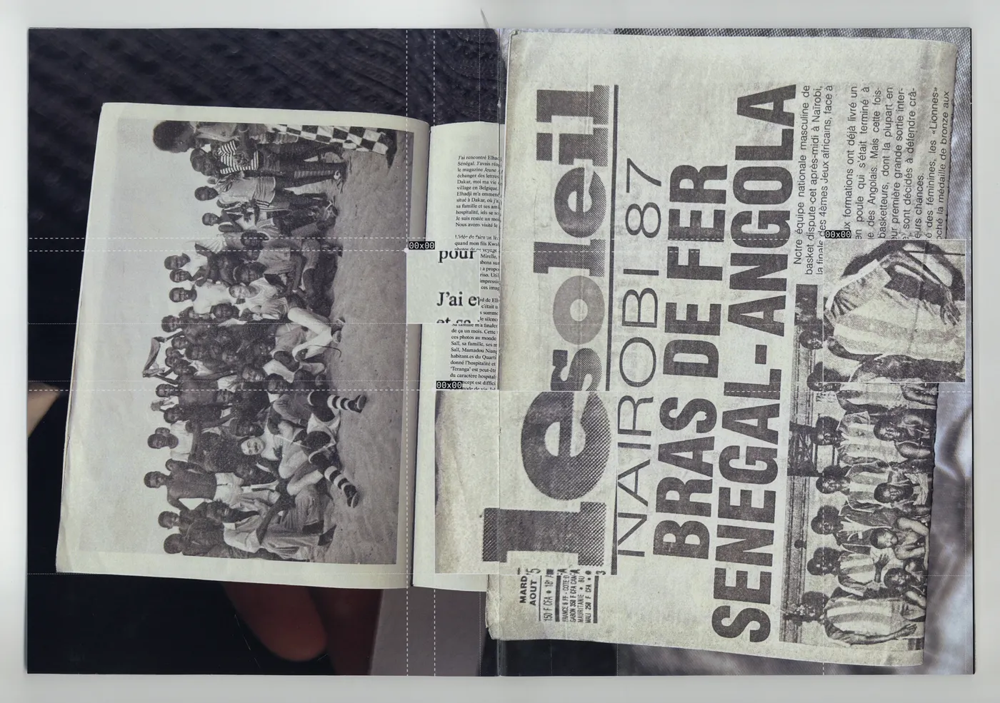
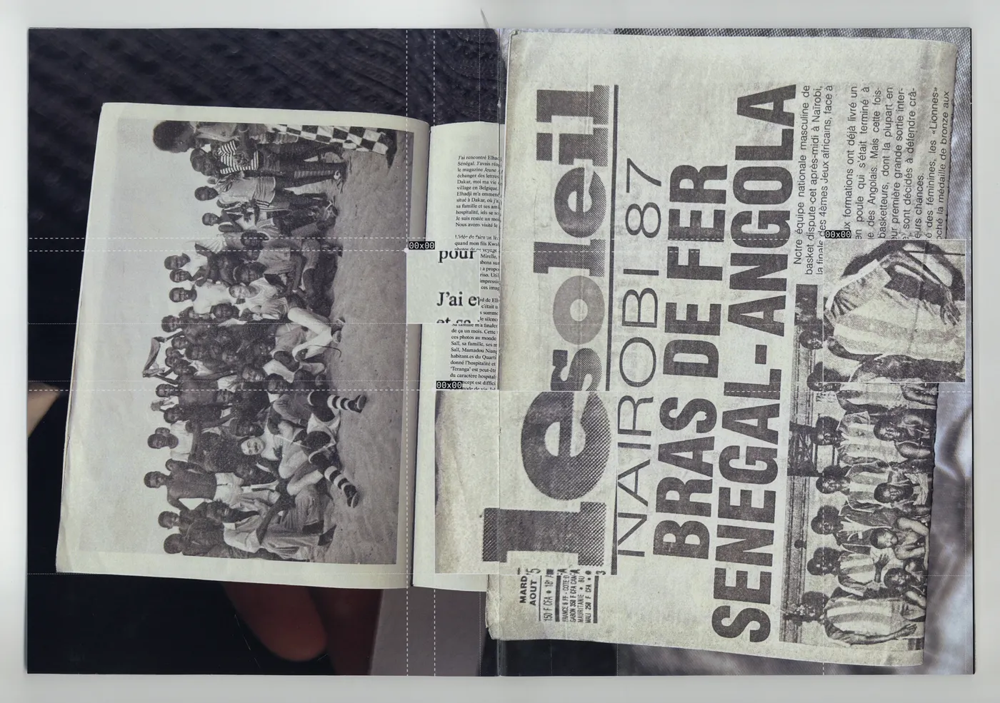
 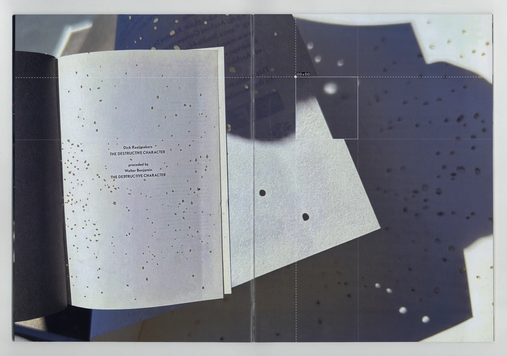
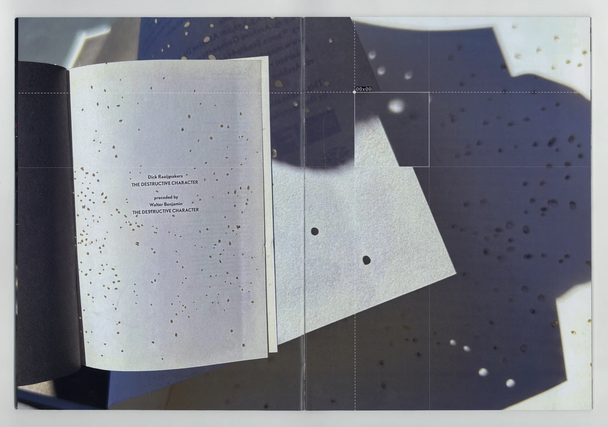


 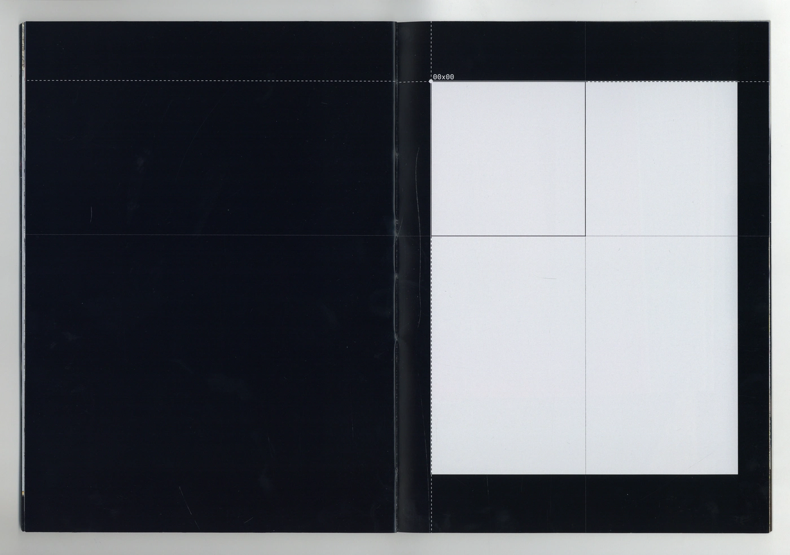
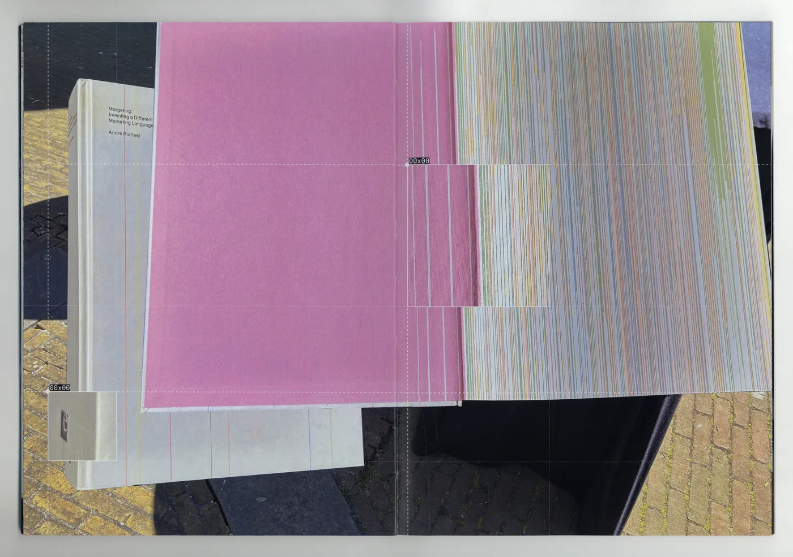
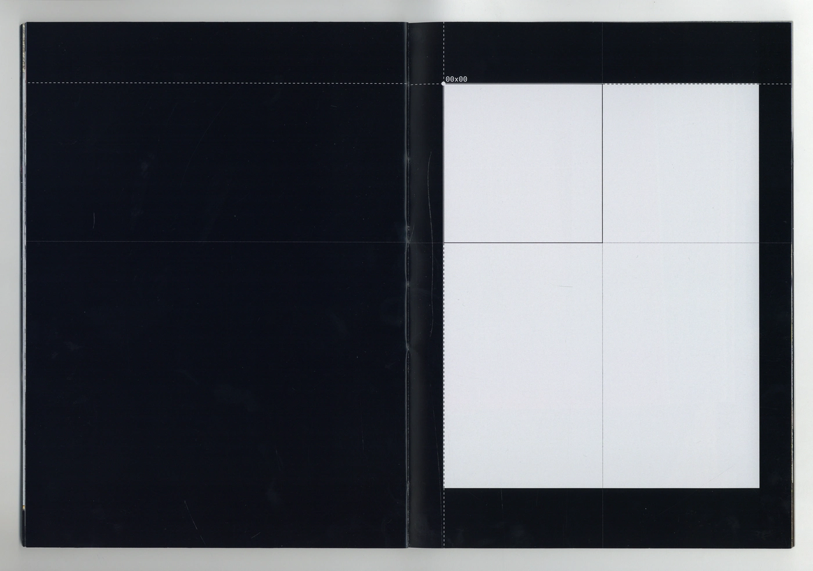
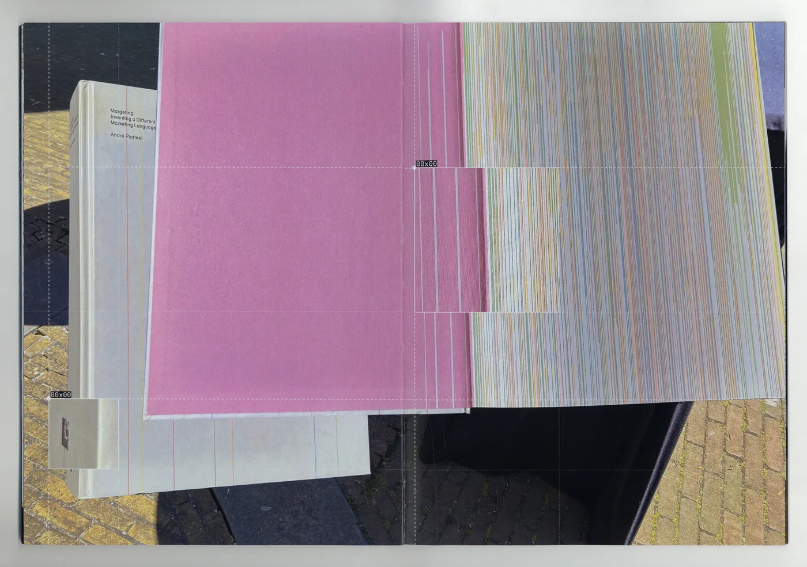


Catalogue of Best Dutch Design Books
A catalogue showcasing five books within the Best Dutch Book Design selection of 2025. The visual design of this publication distills Olivia’s physical experience of moving through Huis van het Boek and the cognitive rhythm of scanning its books into a visual framework.
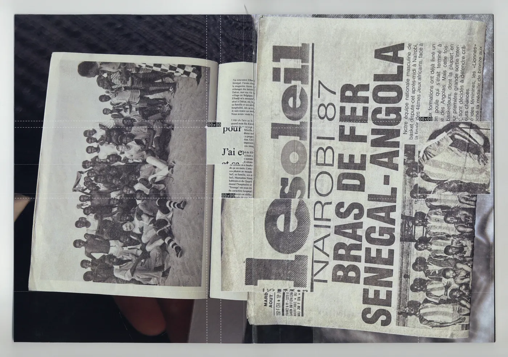
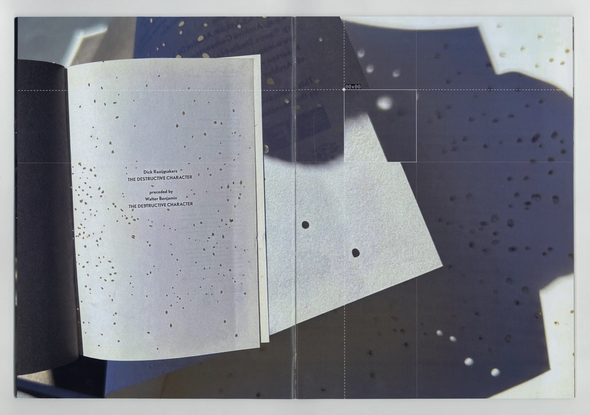
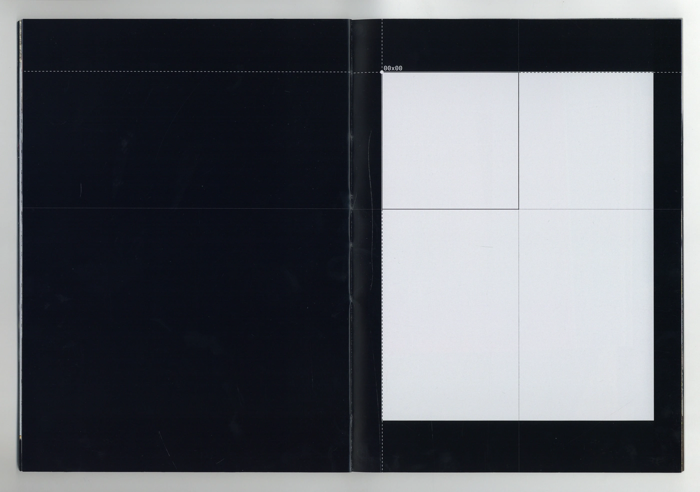
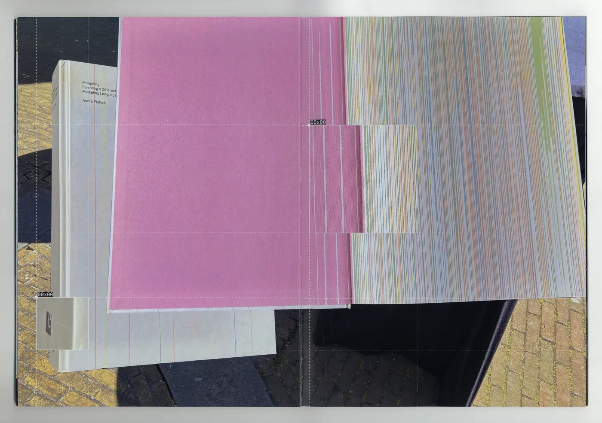